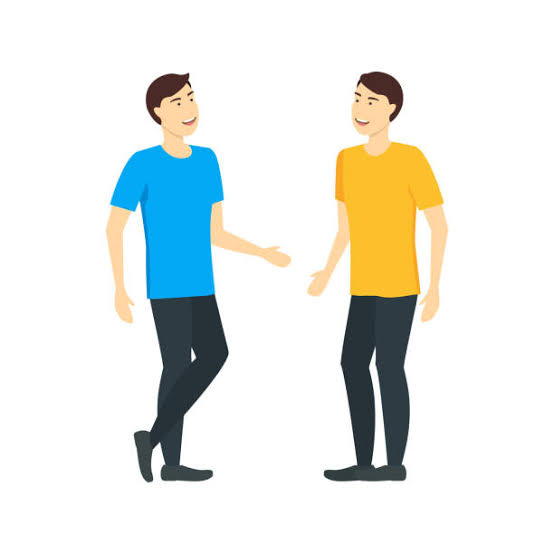
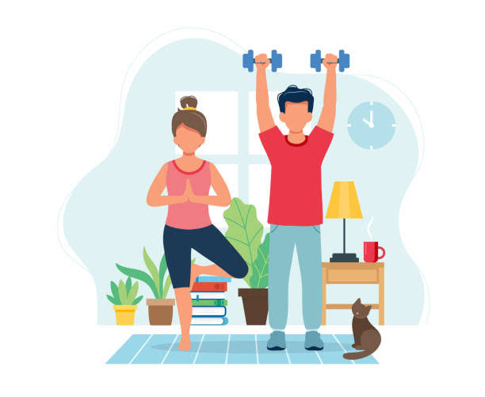
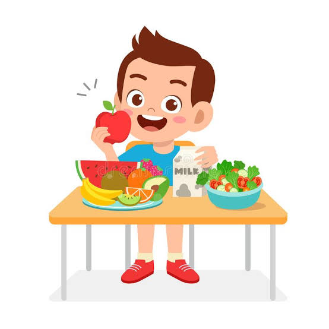
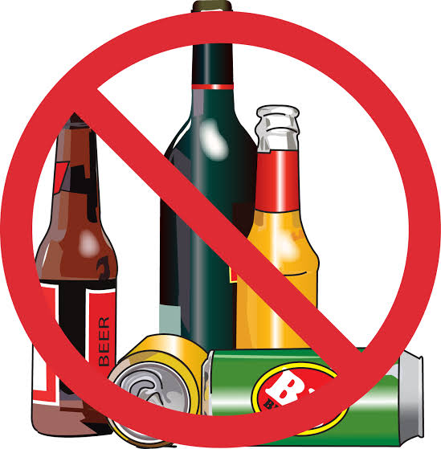
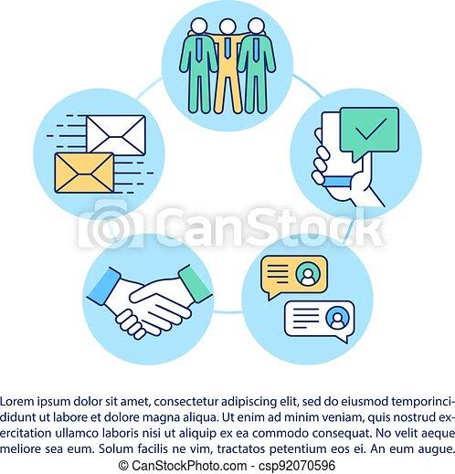
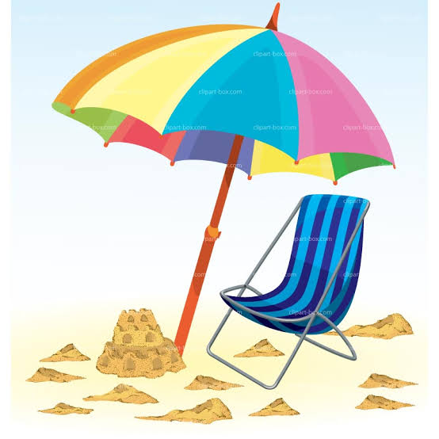
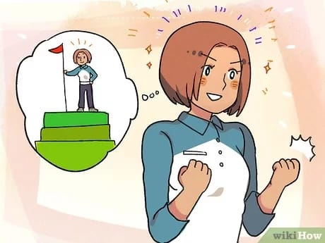

Mental Health Tips
Talk about your feelings: Talking about your feelings can help you stay in good mental health and deal with times when you feel troubled.
Keep active: Regular exercise can boost your self-esteem and can help you concentrate, sleep, and feel better. Exercise keeps the brain and your other vital organs healthy, and is also a significant benefit towards improving your mental health.
Eat Well: Your brain needs a mix of nutrients in order to stay healthy and function well, just like the other organs in your body. A diet thats good for your physical health is also good for your mental health.
Drink sensibly: We often drink alcohol to change our mood. Some people drink to deal with fear or loneliness, but the effect is only temporary.
Keep in touch: Theres nothing better than catching up with someone face to face, but thats not always possible. You can also give them a call, drop them a note, or chat to them online instead. Keep the lines of communication open: its good for you!
Take a break:A change of scene or a change of pace is good for your mental health.
Do something you are good at: Enjoying yourself can help beat stress. Doing an activity you enjoy probably means youre good at it, and achieving something boosts your self-esteem
Accept who you are: Were all different. Its much healthier to accept that you are unique than to wish you were more like someone else. Feeling good about yourself boosts your confidence to learn new skills, visit new places and make new friends. Good self-esteem helps you cope when life takes a difficult turn.
